검증 완료 · Vivado → Vitis → 실제 LED 점멸 → Watch 최종 성공
실습 목표 · 0.5초마다 LED0 반전
07장 UART Echo 성공 하드웨어에 AXI Timer만 추가합니다.
100 MHz 타이머의 만료를 0.5초마다 확인하여 LED0를 반전시킵니다. LED가 켜졌다 꺼지는 전체 주기는 약 1초입니다. LED0 반복 점멸은 실제 보드에서 확인했으며, 정확한 0.5초 간격은 외부 계측기로 측정하지 않았습니다.
07장 하드웨어에 무엇을 추가하는가
기존 BRAM·GPIO·UART·Clock·Reset은 유지합니다.
| 기능 | 07장 | 08장 |
|---|---|---|
| MicroBlaze V / 16 KiB BRAM | 존재 | 유지 |
| AXI GPIO · LED/SW | 존재 | 유지 |
| AXI UART Lite · Echo | 존재 | 유지 |
| AXI SmartConnect | 2개 Slave 연결 | 3개 Slave 연결 |
| AXI Timer | 없음 | 신규 추가 |
| Interrupt Controller | 없음 | 09장에서 연결 |
타이머 IP는 FPGA 외부 핀을 사용하지 않습니다. LED 출력은 06장에서 연결한 AXI GPIO를 그대로 재사용합니다.
AMD PG079 원문 · AXI Timer 내부 구조
기존 교재의 재작성 SVG를 제거하고 AMD 공식 원본의 위치와 문서 버전을 명확히 표기합니다.
AXI4-Lite(악시 포 라이트, 단일 레지스터 읽기·쓰기용 인터페이스)로 CPU가 Timer 레지스터를 설정하고 읽습니다. Counter는 CPU 코드가 매 순간 감소시키는 것이 아니라 s_axi_aclk에 따라 하드웨어에서 독립적으로 진행됩니다.
AMD 원문 레지스터 표 · Timer 0을 사용
아래 주소 오프셋은 AMD PG079 Register Space의 Table 1과 같은 값입니다.
| Offset | Register Name (원문) | 역할 |
|---|---|---|
0x00 | TCSR0 | Timer 0 Control / Status |
0x04 | TLR0 | Timer 0 Load Register |
0x08 | TCR0 | Timer 0 현재 카운트 값 |
0x10 | TCSR1 | Timer 1 Control / Status (이번 장 미사용) |
0x14 | TLR1 | Timer 1 Load Register |
0x18 | TCR1 | Timer 1 현재 카운트 값 |
AMD PG079 · Register Space — Table 1 원문 읽기
실제 Timer Base Address는 0x41C00000입니다. 예: TCSR0의 주소는 0x41C00000, TLR0는 0x41C00004입니다.
TCSR0의 주요 설정은 T0INT(bit 8, 만료 플래그), ENT0(bit 7, 카운터 동작), ENIT0(bit 6, 인터럽트 출력), LOAD0(bit 5, 값 적재), ARHT0(bit 4, 자동 재적재), UDT0(bit 1, 감소), MDT0(bit 0, Generate 모드)입니다. AMD TCSR0 전체 비트 원문
0.5초를 만드는 카운트 값
실제 연결한 Timer의 AXI Clock은 100 MHz입니다.
0.5 s ÷ 10 ns = 50,000,000 clocks
TLR0 = 50,000,000 − 2 = 49,999,998 = 0x02FAF07E
PG079의 Down-count Generate Mode에서는 TIMING_INTERVAL = (TLRx + 2) × AXI_CLOCK_PERIOD입니다. AMD PG079 · Generate Mode 원문
다음 단계에서는 32비트 Down Count + Auto Reload(오토 리로드, 자동 재적재) + Polling(폴링, CPU 반복 확인)을 사용합니다. Interrupt(인터럽트, 이벤트 알림 신호) 배선은 09장에서 진행합니다.
07장 성공 프로젝트 열기
이후 08장 복제본을 만들기 전에 확인한 화면입니다.
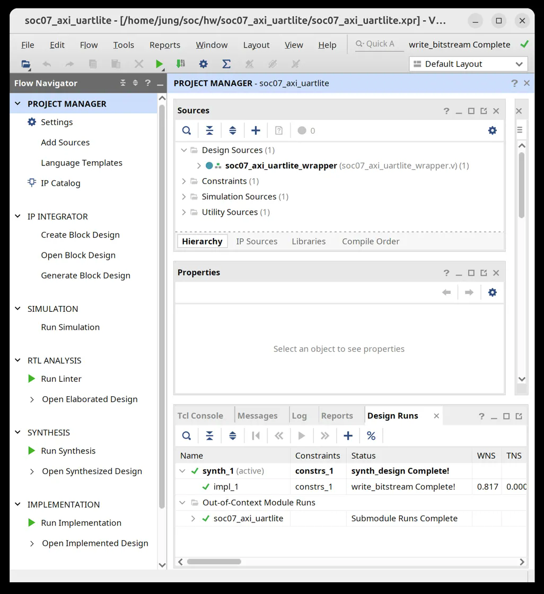
soc07_axi_uartlite.xpr 오픈. write_bitstream Complete, WNS +0.817 ns는 07장 성공 결과입니다. 08장 타이밍 결과가 아닙니다.08장 Project·Block Design 분리
검증된 07장 파일을 덮어쓰지 않습니다.
- Vivado Project Save As
File → Project → Save As. Project namesoc08_axi_timer, Project location/home/jung/soc/hw. Create project subdirectory와 Include run results 선택 후 OK.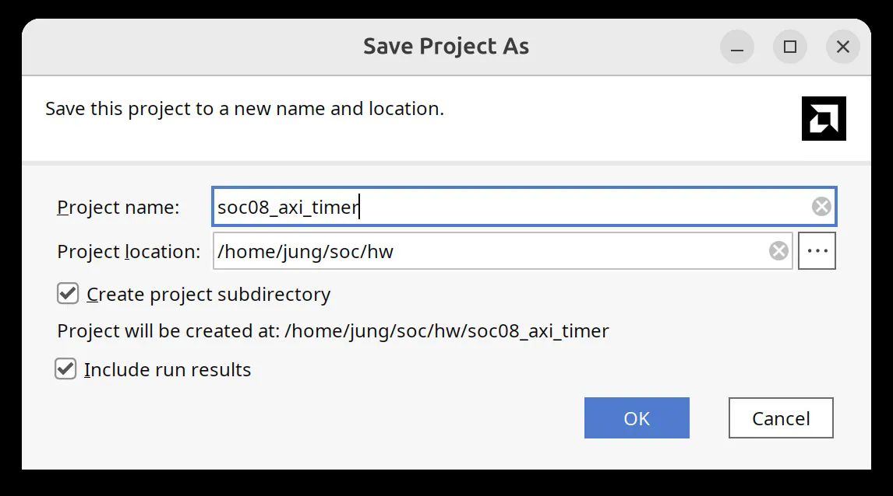
실제 GUI 02 · 08장 Vivado Project Save As — 기존 07장 프로젝트 보존이미지 클릭 시 원본 확대 - Block Design Save As08장 복제본에서 기존
soc07_axi_uartlite.bd를 열고File → Save Block Design As. Design namesoc08_axi_timer, Directory<Local to Project>, Add to source setDesign Sources선택 후 OK.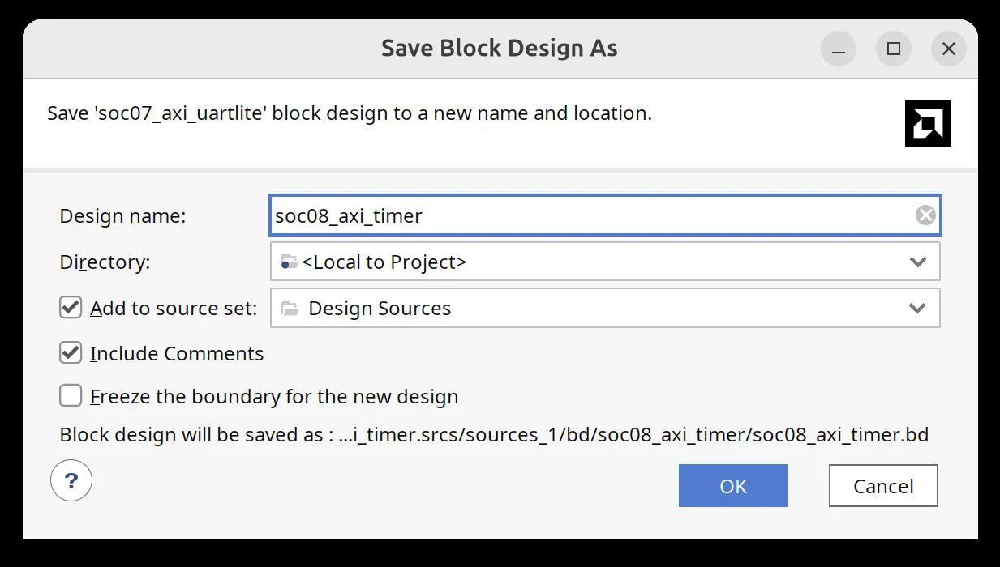
실제 GUI 03 · 08장 Block Design Save As — 프로젝트 내부로 분리이미지 클릭 시 원본 확대 - 기존 07장 파일 보호08장 Sources에서 새
soc08_axi_timer.bd를 사용하며, 오래된 07장 래퍼가 Top이면 나중에 08장 새 래퍼를 생성·지정합니다. 원본 소스 삭제 옵션을 사용하지 않습니다.
AXI Timer IP 추가·설정
Timer 0만 실제 소프트웨어에서 사용합니다.
- AXI Timer 추가08장 Block Design에서
+(Add IP) →AXI Timer검색 → 추가. 블록 인스턴스axi_timer_0확인.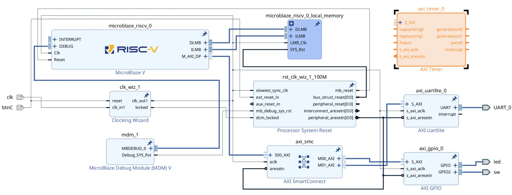
실제 GUI 04 · 07장 구성에 axi_timer_0 IP 추가 — 아직 연결 전이미지 클릭 시 원본 확대 - Re-customize IP
axi_timer_0더블클릭 → Enable 64-bit mode 해제, Width of the timer/counter (bits) = 32 확인. Enable Timer 2는 현재 체크된 상태로 두어도 됩니다. 이번 코드에서 Timer 0만 사용합니다. OK.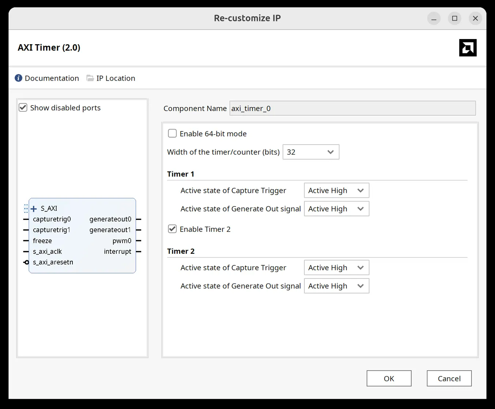
실제 GUI 05 · AXI Timer 2.0 설정 — 32비트, 64-bit 모드 해제이미지 클릭 시 원본 확대 - 외부 이벤트 미사용
capturetrig0/1,generateout0/1,pwm0,interrupt는 이번 실습에서 외부로 연결하지 않습니다.
AXI · Clock · Reset 연결
기존 SmartConnect를 재사용합니다.
- Run Connection Automation
axi_timer_0/S_AXI만 대상으로 Automation 실행. Master/microblaze_riscv_0 (Periph), Bridge IP/axi_smc, 100 MHz Clock 확인 후 OK.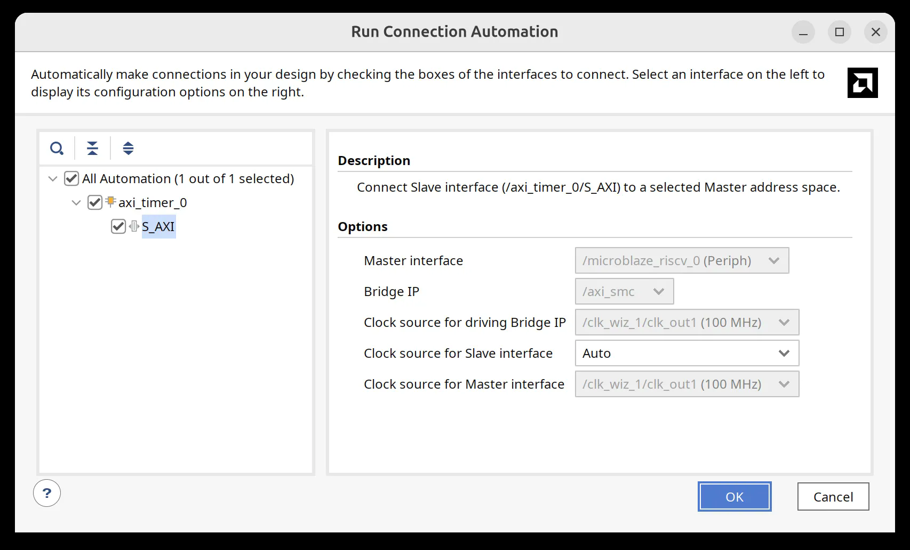
실제 GUI 06 · Connection Automation — 기존 axi_smc로 S_AXI 연결이미지 클릭 시 원본 확대 - 완성된 AXI 경로
microblaze_riscv_0/M_AXI_DP→axi_smc→ GPIO/UART/Timer의 각S_AXI. Timer의s_axi_aclk과s_axi_aresetn도 연결된 화면입니다.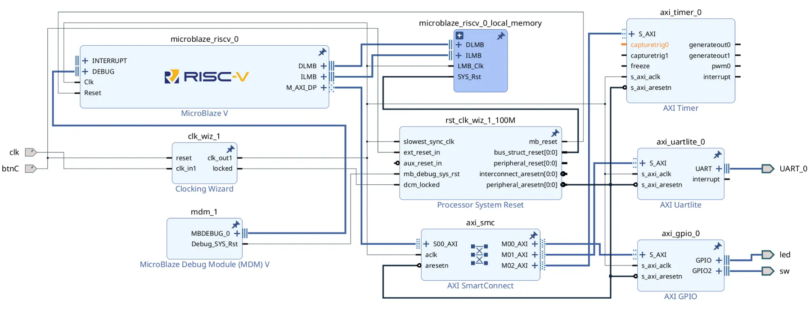
실제 GUI 07 · AXI SmartConnect → GPIO/UART/Timer 연결 완료이미지 클릭 시 원본 확대 - Interrupt 미연결 확인Timer의
interrupt포트는 외부에 연결하지 않습니다. Polling에서는TCSR0.T0INT상태를 AXI Read로 확인합니다.
Address Editor · 실제 Timer 주소 확정
실제 Address Editor 검증 완료.
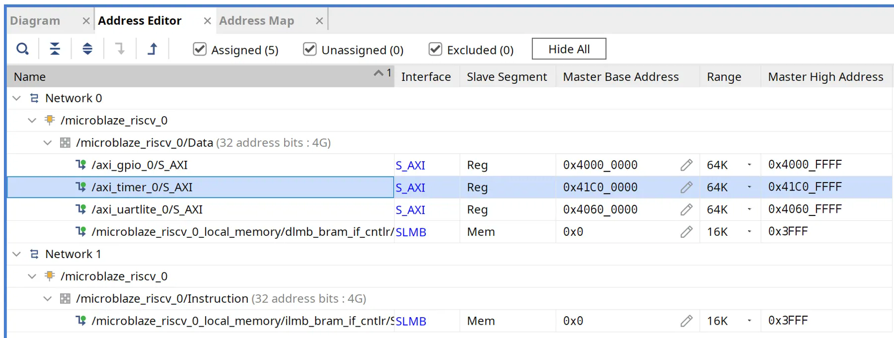
| IP | Base | High | Range |
|---|---|---|---|
| Local BRAM | 0x00000000 | 0x00003FFF | 16 KiB |
| AXI GPIO | 0x40000000 | 0x4000FFFF | 64 KiB |
| AXI UART Lite | 0x40600000 | 0x4060FFFF | 64 KiB |
| AXI Timer | 0x41C00000 | 0x41C0FFFF | 64 KiB |
Validate Design
기존 화면에서 다시 Block Design을 열고 정합성을 검사합니다.
- Block Design 저장Diagram 탭으로 돌아간 뒤
Ctrl+S로 현재 08장 BD를 저장합니다. - Validate Design 실행Diagram 상단 Validate Design 아이콘을 클릭하거나 F6을 누릅니다.
- 결과 확인
Validation successful표시와 Messages 창의 Error·Critical Warning 유무를 확인합니다. 경고가 있다면 캡처 후 조치합니다. 바로 넘어가지 않습니다.
실제 검증 캡처 · Validate Design 결과 창. 이 단계는 실제 보드 및 GUI 검증 완료.
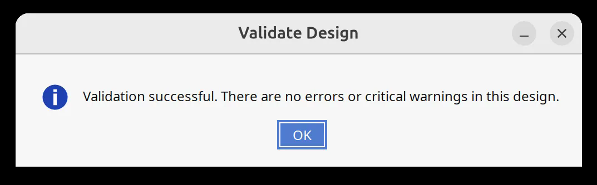
08장 Wrapper·Top 확인
07장 래퍼를 실수로 최상위로 사용하면 Timer가 합성에 포함되지 않을 수 있습니다.
- 08장 BD 선택Sources → Design Sources에서
soc08_axi_timer.bd를 확인합니다. - HDL Wrapper 생성새 BD를 우클릭 → Create HDL Wrapper → Let Vivado manage wrapper and auto-update → OK.
soc08_axi_timer_wrapper생성. - Set as Top
soc08_axi_timer_wrapper를 우클릭 → Set as Top. 굵게 표시된 Top이 08장 래퍼인지 확인합니다. - 기존 외부 포트 유지Wrapper의
clk,btnC,led[15:0],sw[15:0],UART_0관련 RX/TX 포트를 07장과 대조합니다. 새로운 Timer 외부 포트는 없어야 합니다.
실제 검증 캡처 · Design Sources · 08장 Wrapper/Top 포트 목록. 이 단계는 실제 보드 및 GUI 검증 완료.
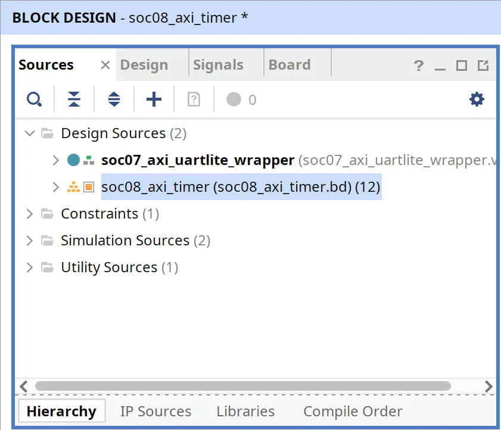
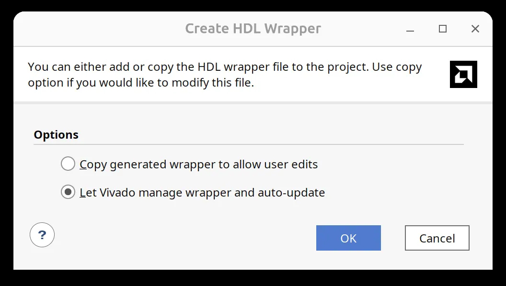
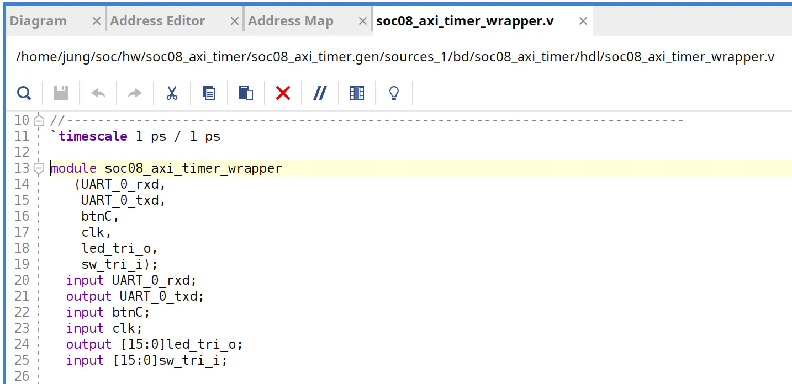
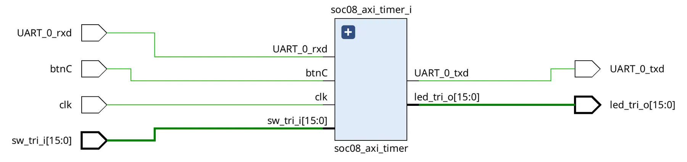
XDC 유지·핀 중복 확인
08장에서는 외부 핀을 새로 할당하지 않습니다.
- 기존 제약 확인Sources → Constraints에서 07장의 정상 작동 XDC가 08장 복제본에 포함돼 있는지 확인합니다.
- 경로 점검XDC Properties의 File Path가
soc07_axi_uartlite원본 폴더를 직접 가리키지 않는지 확인합니다. 그렇다면 복사본을 08장 프로젝트에 포함시킨 뒤 소스 참조를 변경합니다. - 중복 제약 방지
basys3_axi_timer_led.xdc예제의 LED/SW만 있는 불완전한 파일로 XDC를 교체하지 않습니다. Clock W5, Reset U18, UART RX/TX B18/A18 및 기존 LED/SW 핀 제약을 유지합니다.
실제 검증 캡처 · Constraints 및 XDC 파일 경로. 이 단계는 실제 보드 및 GUI 검증 완료.
Generate Bitstream
07장의 Bitstream과 구별되는 08장 결과물을 생성합니다.
- 비트스트림 생성Flow Navigator → Generate Bitstream. 하위 합성/구현이 필요하다는 창이 나오면 Yes, Launch Runs는 설정 확인 후 OK.
- 완료 확인Design Runs에서
synth_1,impl_1,write_bitstream Complete를 확인합니다. Error 또는 Critical Warning이 있는지 먼저 봅니다. - 타이밍 확인Implementation의 Report Timing Summary에서 WNS/TNS를 확인합니다. 07장 WNS +0.817 ns를 08장 결과로 복사하지 않습니다.
- Bitstream 파일 경로08장
.runs/impl_1/아래soc08_axi_timer_wrapper.bit등 실제 생성 파일명을 확인합니다. 래퍼 이름에 따라 달라질 수 있습니다.
실제 검증 캡처 · 08장 Bitstream Generation Completed와 Timing Summary. 이 단계는 실제 보드 및 GUI 검증 완료.
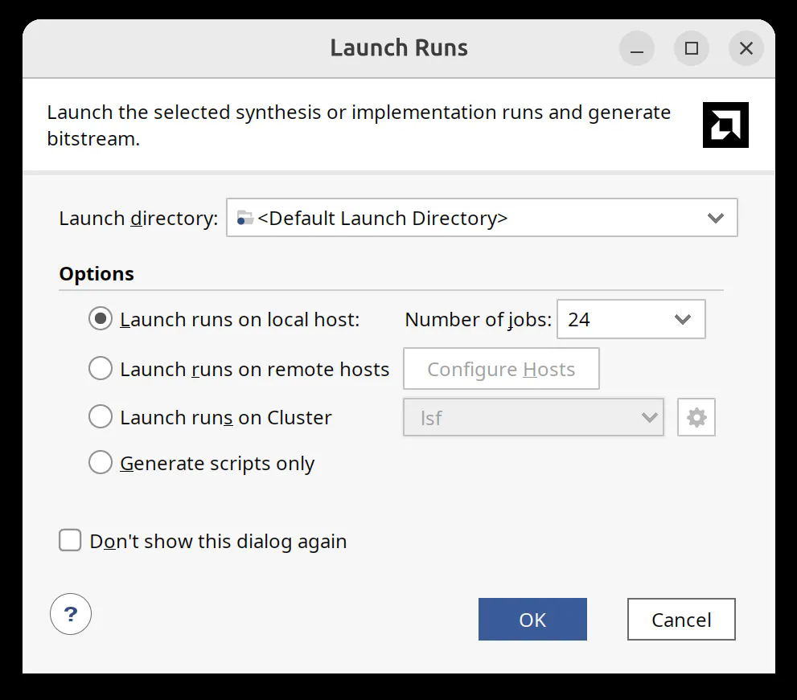
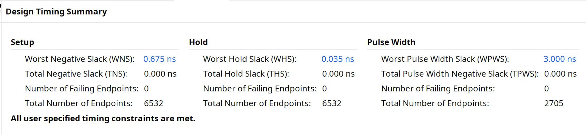
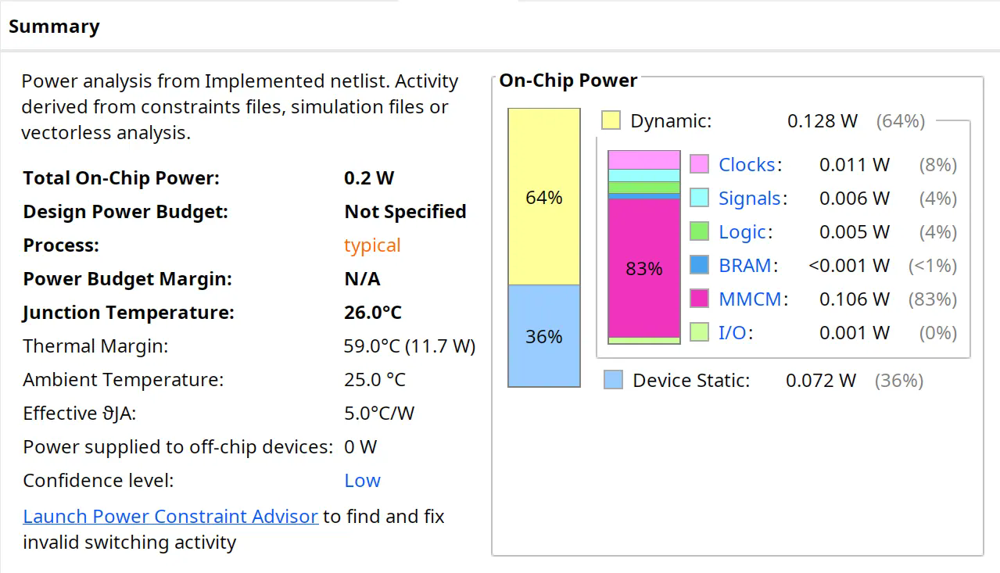
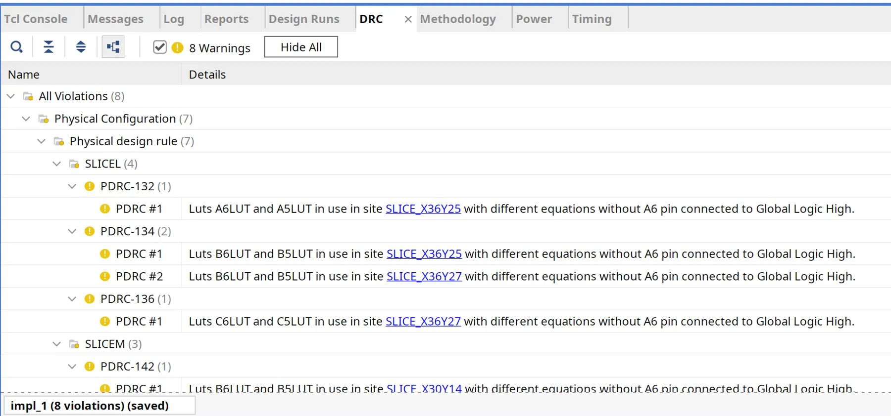
DRC 주의: 실제 결과에 Warning 8건이 관측되었습니다. Bitstream 생성·LED 동작 성공과는 별도로 원인 분석이 남아 있습니다. 전력 약 0.200W는 LOW confidence 추정값이며 실측 전력이 아닙니다.
08장 XSA 내보내기
새 하드웨어 사양을 Vitis로 가져갑니다.
- Export HardwareVivado → File → Export → Export Hardware → Next.
- Include bitstreamOutput에서 Include bitstream을 선택합니다.
- 독립 XSA 저장파일 이름
soc08_axi_timer, 저장 경로/home/jung/soc/hw/soc08_axi_timer로 지정 후 Finish. - 파일 확인실제
soc08_axi_timer.xsa생성 여부와 파일 위치를 확인합니다. 기존 07장 XSA는 덮어쓰지 않습니다.
실제 검증 캡처 · Export Hardware Include bitstream / Files / Finish. 이 단계는 실제 보드 및 GUI 검증 완료.
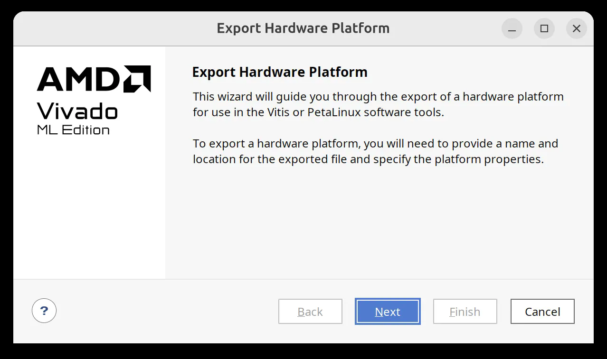
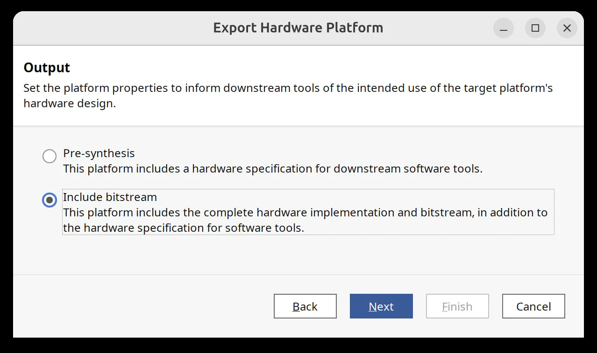
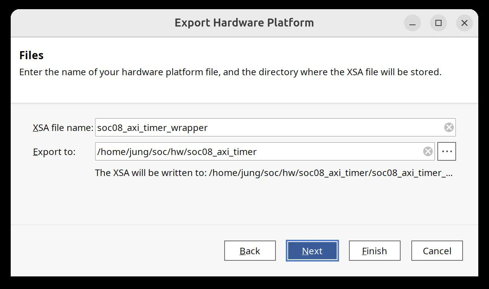
Vitis 08장 Platform 생성
07장 플랫폼을 덮어쓰지 않습니다.
- Platform 만들기Vitis Unified IDE 2024.2 → File → New Component → Platform.
- Name and LocationComponent name
soc08_axi_timer_platform, 작업공간/home/jung/soc/sw. - Hardware Design XSAHardware Design을 선택하고
/home/jung/soc/hw/soc08_axi_timer/soc08_axi_timer_wrapper.xsa지정. - OS / ProcessorOperating System
standalone, Processormicroblaze_riscv_0를 선택. Finish. - Platform BuildFLOW → Component
soc08_axi_timer_platform→ Build. 실제 종료 메시지를 확인합니다. - Driver / xparameters 확인Platform이 생성한
xparameters.h에서XTMRCTRBase Address와XGPIOBase Address 매크로를 확인합니다. Timer는 실제 주소0x41C00000여야 합니다.SDT사용 여부와 실제 매크로 이름은 생성 파일로 판정합니다.
실제 검증 캡처 · Platform 생성, 빌드 및 xparameters.h. 이 단계는 실제 보드 및 GUI 검증 완료.
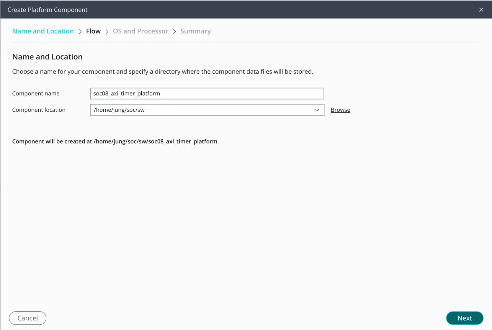
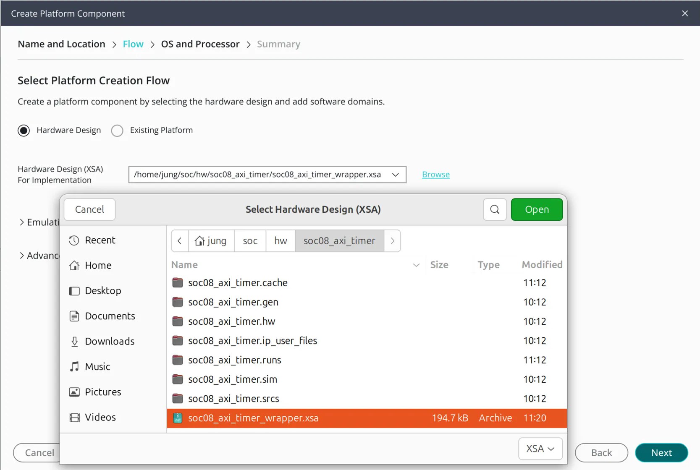
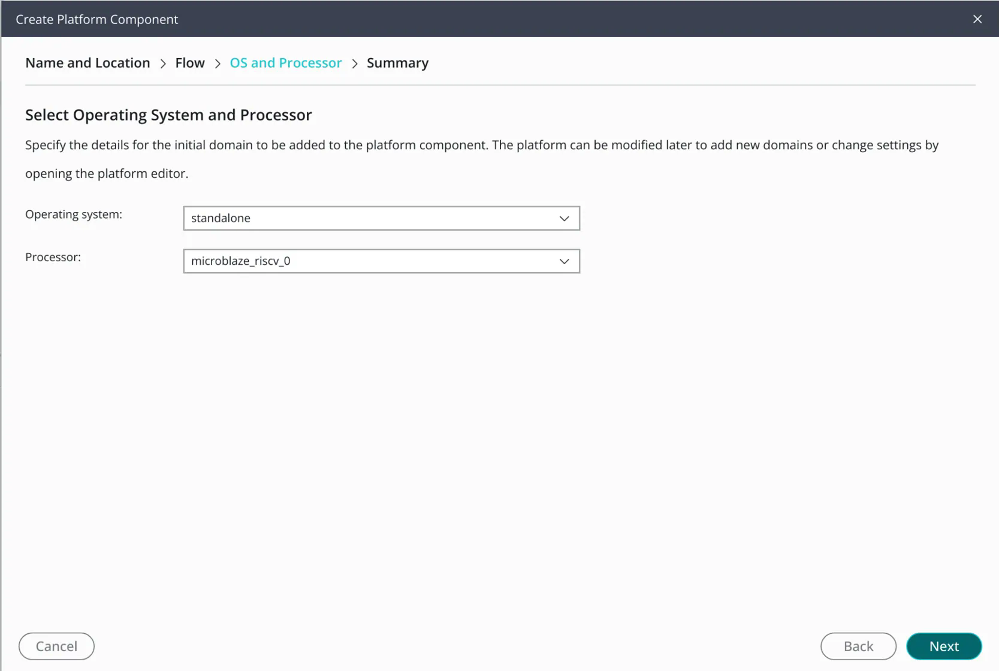
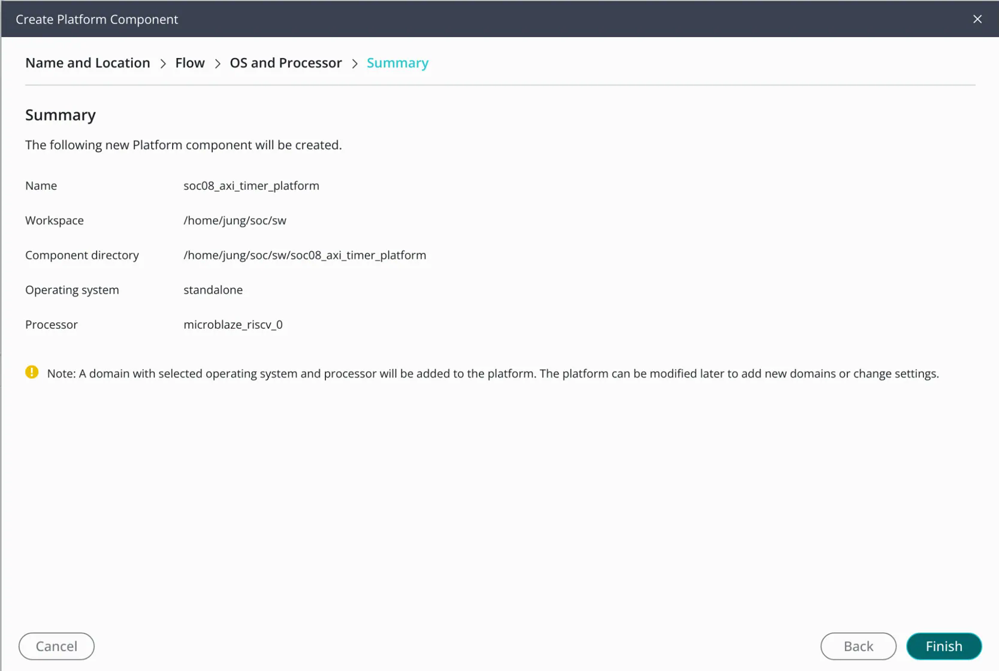
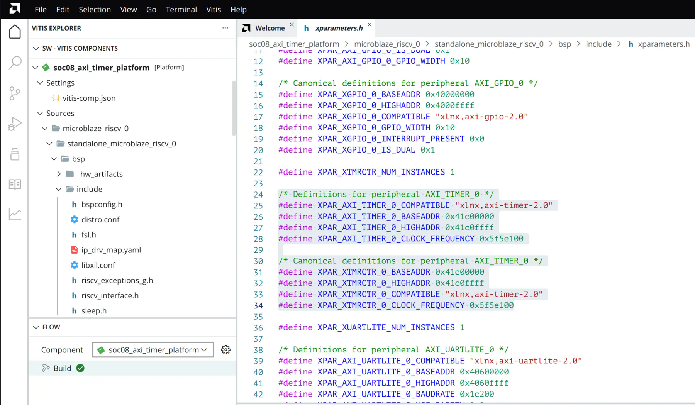
Timer Application 생성
07장의 UART Echo 애플리케이션을 덮어쓰지 않습니다.
- 새 애플리케이션File → New Component → Application 또는 Empty Application 템플릿 생성 흐름. 이름
soc08_axi_timer. - Platform 연결Platform에
soc08_axi_timer_platform을, Domain에standalone_microblaze_riscv_0을 선택. - 소스 배치Application →
src/main.c에 다음 섹션의 코드를 배치합니다. 기존에main()이 있다면 중복이 없도록 정리합니다. - BSP 확인필요한 드라이버
xtmrctr.h,xgpio.h가 빌드에서 인식되는지 확인합니다. 누락 시 Platform 설정에서 해당 드라이버를 확인합니다.
실제 검증 캡처 · Application 생성 단계의 Platform/Domain/Summary 화면. 이 단계는 실제 보드 및 GUI 검증 완료.
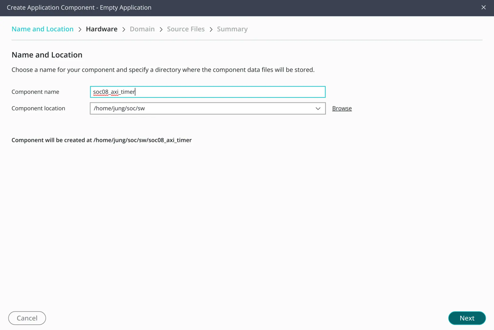
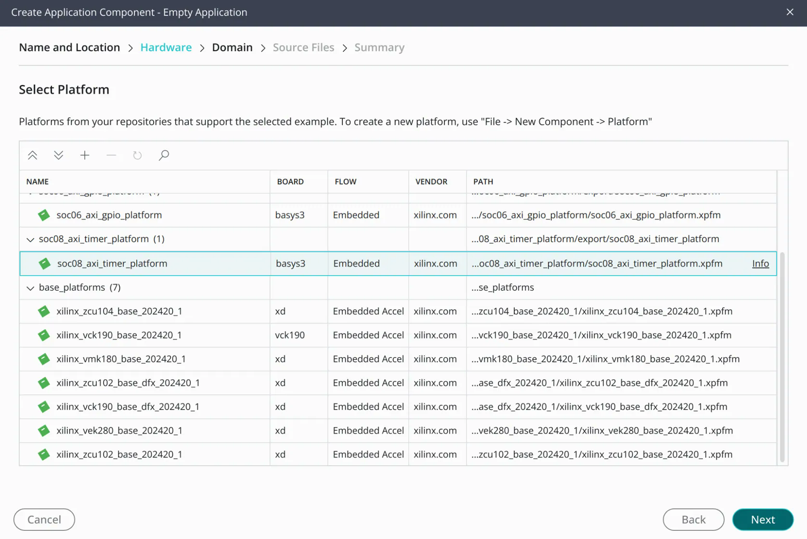
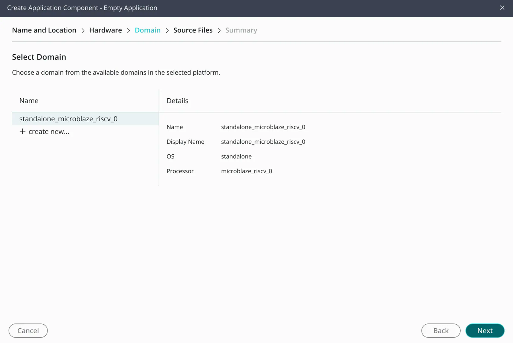
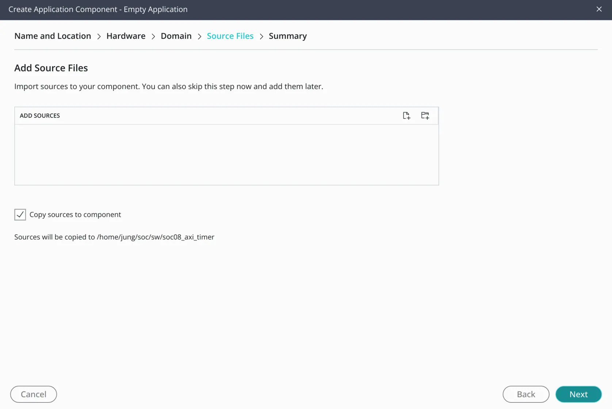
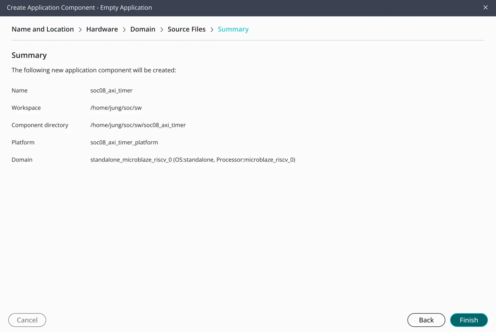
main.c · 0.5초 Timer Polling 코드
하드웨어를 직접 세는 것은 Timer IP이며, CPU는 만료 상태를 확인해 LED를 변경합니다.
#include "xparameters.h"
#include "xtmrctr.h"
#include "xgpio.h"
#include "xstatus.h"
#include "xil_types.h"
/* SoC08: Timer0 0.5초 Polling, 기존 AXI GPIO LED0 출력 */
#define TIMER0 0U
#define GPIO_LED_CHANNEL 1U
#define LED0_MASK 0x00000001U
/* 100 MHz × 0.5 s = 50,000,000 clocks, PG079: TLR + 2 */
#define TIMER_RESET_VALUE (50000000U - 2U)
#ifndef SDT
#define TIMER_DEVICE_ID XPAR_TMRCTR_0_DEVICE_ID
#define GPIO_DEVICE_ID XPAR_GPIO_0_DEVICE_ID
#else
#define TIMER_BASEADDR XPAR_XTMRCTR_0_BASEADDR
#define GPIO_BASEADDR XPAR_XGPIO_0_BASEADDR
#endif
static XTmrCtr Timer;
static XGpio Gpio;
/* Vitis Debug Watch로 확인할 변수 */
volatile u32 expire_count = 0U;
volatile u32 led_state = 0U;
volatile u32 timer_value = 0U;
static int init_gpio(void)
{
#ifndef SDT
return XGpio_Initialize(&Gpio, GPIO_DEVICE_ID);
#else
return XGpio_Initialize(&Gpio, GPIO_BASEADDR);
#endif
}
static int init_timer(void)
{
int status;
#ifndef SDT
status = XTmrCtr_Initialize(&Timer, TIMER_DEVICE_ID);
#else
status = XTmrCtr_Initialize(&Timer, TIMER_BASEADDR);
#endif
if (status != XST_SUCCESS) return status;
status = XTmrCtr_SelfTest(&Timer, TIMER0);
if (status != XST_SUCCESS) return status;
/* (유지) Down Count + Auto Reload, Interrupt 출력은 미사용 */
XTmrCtr_SetOptions(&Timer, TIMER0,
XTC_DOWN_COUNT_OPTION | XTC_AUTO_RELOAD_OPTION);
XTmrCtr_SetResetValue(&Timer, TIMER0, TIMER_RESET_VALUE);
XTmrCtr_Start(&Timer, TIMER0);
return XST_SUCCESS;
}
/* 만료 비트 T0INT는 1을 쓰면 0으로 지워진다. */
static void clear_timer_expired(void)
{
u32 csr = XTmrCtr_GetControlStatusReg(Timer.BaseAddress, TIMER0);
XTmrCtr_SetControlStatusReg(Timer.BaseAddress, TIMER0,
csr | XTC_CSR_INT_OCCURED_MASK);
}
int main(void)
{
if (init_gpio() != XST_SUCCESS) return XST_FAILURE;
if (init_timer() != XST_SUCCESS) return XST_FAILURE;
/* LED0 초기 소등: 기존 AXI GPIO 채널 1 출력 */
XGpio_DiscreteWrite(&Gpio, GPIO_LED_CHANNEL, led_state);
while (1) {
timer_value = XTmrCtr_GetValue(&Timer, TIMER0);
if (XTmrCtr_IsExpired(&Timer, TIMER0)) {
clear_timer_expired();
expire_count++;
led_state ^= LED0_MASK; /* 0 → 1 → 0 반복 */
XGpio_DiscreteWrite(&Gpio, GPIO_LED_CHANNEL, led_state);
}
}
}
| 코드 | 의미 |
|---|---|
XTmrCtr_SetResetValue() | 49,999,998을 TLR0에 설정 |
XTmrCtr_Start() | Timer 0 시작 |
XTmrCtr_IsExpired() | 만료 상태 폴링 |
clear_timer_expired() | T0INT 플래그를 1 쓰기로 제거 |
XGpio_DiscreteWrite() | LED0 켜기/끄기 |
드라이버 출처: AMD embeddedsw · Timer Driver (2024.2) 및 Polling Example.
실제 SDT 정의와 xparameters.h의 매크로 이름은 Vitis Platform Build 성공 후 확인합니다. 이 main.c는 Vitis Application Build, 실제 Basys3 LED0 점멸, Debug Watch expire_count 37회까지 검증했습니다. 정확한 0.5초 주기는 외부 계측기로 측정하지 않았습니다.
07.1장과 같은 형식으로 함수·변수·C 문법과 실제 Timer/GPIO 동작을 연결했습니다. 전체 main.c는 변경하지 않았습니다.
Application Build
실행 파일을 생성하고 경고·오류를 확인합니다.
- Application BuildFLOW 패널의 Component에서
soc08_axi_timer선택 → Build. - 컴파일 오류 확인
XTmrCtr_Initialize,XPAR_XTMRCTR_0_BASEADDR,XPAR_XGPIO_0_BASEADDR관련 메시지가 있으면xparameters.h내용과 일치 여부를 확인합니다. - 성공 판정Build Finished successfully 및
soc08_axi_timer.elf파일 생성 확인. 빌드 성공 전에는 FPGA 프로그램으로 넘어가지 않습니다.
실제 검증 캡처 · Vitis Build 출력과 ELF 파일. 이 단계는 실제 보드 및 GUI 검증 완료.
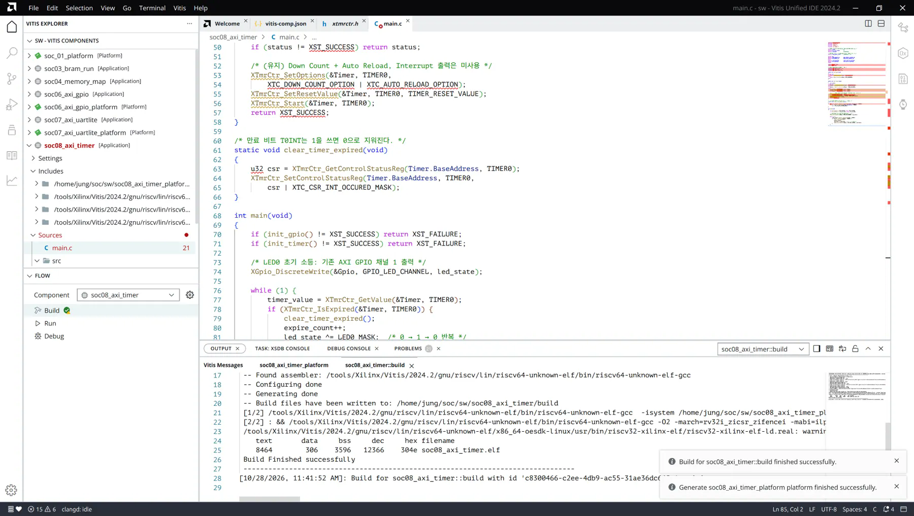
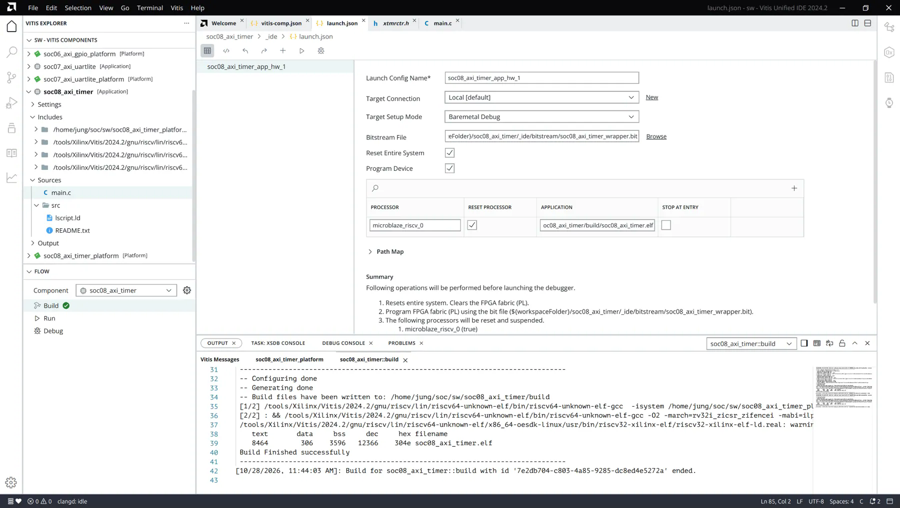
FPGA Program · Run/Debug
검증된 07장 UART Echo를 다시 제작하지 않습니다.
- Basys3 연결USB(JTAG) 연결과 전원을 확인합니다. JP1은 JTAG 모드로 유지합니다.
- 08장 비트스트림 다운로드Vivado Hardware Manager → Open Target / Auto Connect → Program Device에서 08장 Bitstream 선택. 07장 Bitstream을 다시 사용하지 않습니다.
- Vitis Run/Debug 설정08장 Application FLOW에서 Debug 설정(
launch.json탭)을 열어 08장 ELF, 플랫폼, 비트스트림 및microblaze_riscv_0를 확인합니다. - 디버그 시작Debug 실행 후 타깃이 인식되는지 확인합니다. 이전에 확인된 환경에서는 중앙 상단
launch.json탭을 열고 Debug를 실행했을 때 정상 진입했습니다. 이를 만능 해결책으로 단정하지 않습니다. - LED 관측Continue로 실행하여 LED0의 ON/OFF 반전을 관측합니다. 07장의 moserial Echo 실습을 반복하지 않습니다.
실제 검증 캡처 · Program Device 성공 화면 / Debug 진입 / LED0 실제 동작. 이 단계는 실제 보드 및 GUI 검증 완료.
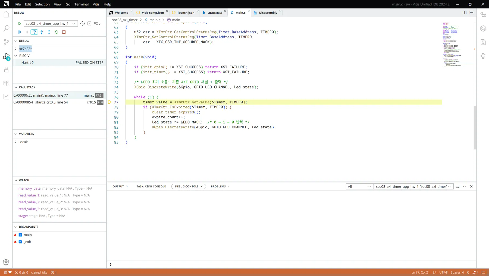
실제 결과 확인 · LED0·Watch
아래 시간표는 설계상 목표 주기이며, 실제 LED 점멸 및 Watch 결과는 별도로 확인했습니다.
| 시간(예상) | expire_count | LED0 |
|---|---|---|
| 0 s | 0 | OFF |
| 0.5 s | 1 | ON |
| 1.0 s | 2 | OFF |
| 1.5 s | 3 | ON |
Debug Watch에서 expire_count, led_state, timer_value를 확인합니다. timer_value는 실행 중 계속 변화하며 Breakpoint로 CPU를 멈춰도 타이머 자체가 자동 정지하지 않을 수 있습니다. expire_count는 폴링 루프가 수행한 만료 처리 횟수이지 외부 측정기로 계측한 정밀한 시간값이 아닙니다.
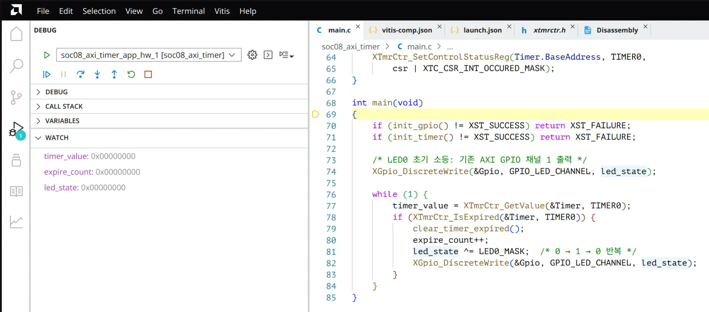
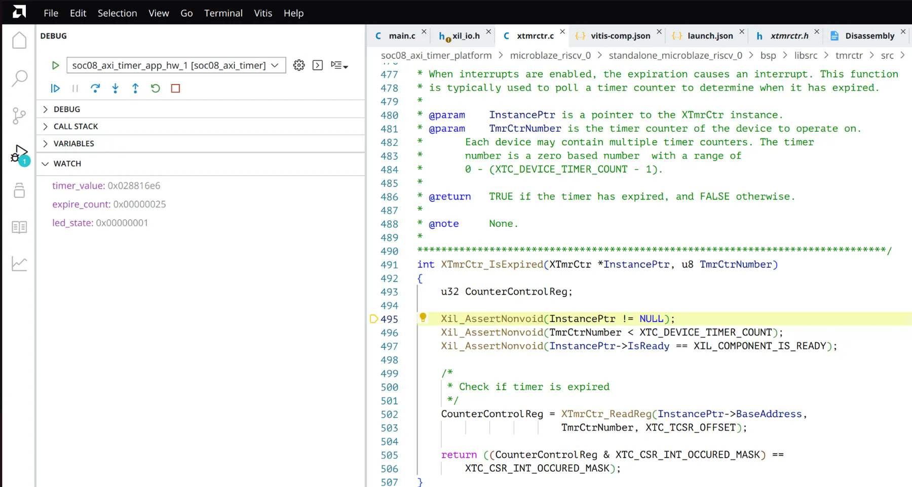
실제 Debug Watch 검증값
| 변수 | 최종 관측값 | 의미 |
|---|---|---|
timer_value | 0x028816E6 | Timer 카운터 값 |
expire_count | 0x00000025 | 37회 만료 처리 |
led_state | 0x00000001 | LED0 ON |
오류가 발생할 때 점검
07장 반복 실습이 아닌 08장의 신규 오류만 우선 확인합니다.
| 증상 | 우선 확인 |
|---|---|
| Validate Design 오류 | Timer S_AXI·Clock·Reset 연결 |
| 08장 Timer가 구현에 포함되지 않음 | soc08_axi_timer_wrapper가 Top인지 |
| 경고: Unconstrained ports | 07장 XDC 경로와 Wrapper 외부 포트명 |
| Vitis Timer 주소 매크로가 없음 | 08장 XSA 사용, Platform Build, xparameters.h |
| LED가 전혀 변하지 않음 | 08장 Bitstream 다운로드 / Timer Reset·Clock·AXI |
| 한 번만 LED가 바뀜 | XTC_AUTO_RELOAD_OPTION 설정 |
| LED가 빠르게 반복됨 | Timer 클록 100 MHz·TLR0 값·T0INT Clear |
| 디버그 타깃 미검출 | 08장 Bitstream / launch.json / JTAG 연결 |
완료 기준 · 다음 09장 준비
09장은 AXI Interrupt Controller를 다루므로 08장에서 인터럽트 배선은 수행하지 않습니다.
| 검증 항목 | 현재 상태 |
|---|---|
| 07장 프로젝트 보존 + 08장 독립 복제 | 실제 GUI 확인 |
| AXI Timer 32비트 / SmartConnect 연결 | 실제 GUI 확인 |
| Timer 0x41C00000 / 64 KiB 할당 | 실제 GUI 확인 |
| Validate Design / Wrapper / XDC | 확인 완료 |
| 08장 Bitstream / XSA | 확인 완료 |
| Vitis 08장 Platform / ELF Build | 확인 완료 |
| Basys3 LED0 0.5초 반전 / Watch | 실기 검증 완료 |